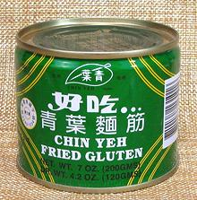

Celiac & Gluten Free
Celiac Disease
(gluten intolerance) is a serious autoimmune
condition of genetic origin and estimated to affect 1 in 133 Americans.
Even minute amounts of gluten in the diet cause an autoimmune reaction
which degrades the lining of the small intestine and it's ability to
absorb nutrition.
"Gluten Free"
is also a fad diet highly promoted by some people
and product developers because it is high profit. It is promoted as a
weight loss diet and to treat Attention Deficit Disorder, but studies
have shown it is ineffective for both those applications.
Overview
This is not a medical site. Nothing here should be considered medical
advice in diagnosis or treatment of any disorder or disease - qualified
practitioners should be consulted. This overview from publicly
available documents may help persons who do not have a gluten problem
in understanding associates who do.
Celiac Disease
- This serious
autoimmune condition is estimated to affect about 1 in 133 Americans (it
has been much under diagnosed in the US) and seems to be more prevalent
now than it was 60 years ago, for unknown reasons. This condition results
in digestive problems, often painful, and in gradual degradation of the
small intestine, resulting in malnutrition and possibly cancer. It is an
inherited condition, so tends to run in families.
There is no cure and the only effective treatment is to completely
avoid even the most tiny amounts of gluten protein in the diet. This is
a particular problem for Catholics because communion wafers contain
gluten.
Celiac disease, when suspected, must be tested for before
taking up a gluten free diet. Properly certified medical practitioners
should be consulted, and reputable dieticians trained in this disorder
should tests prove positive.
Helpful Information: There are now a number of
organizations devoted to this potentially debilitating problem (see
Links for a few), including one specific to
helping celiac College Students through the
unique problems of that environment.
Gluten Sensitivity
- This non-celiac
reaction was formerly disregarded but is now considered real by medical
practitioners. Some say it is more prevalent than Celiac Disease, but
this is still under study. It may, in fact, not be due to gluten but
to carbohydrates called FODMAPs, which are common in foods high in
gluten. It is nowhere near as dangerous to health as celiac disease,
but can be similarly painful.
Gluten Free Diet
- While absolutely
essential for celiac sufferers, and definitely indicated for gluten
sensitivity, "Gluten Free" is being heavily promoted by various people
and businesses for their own financial benefit. It is promoted as a
weight loss diet and a treatment for Attention Deficit Disorder. Actual
tests have shown this diet ineffective for both these problems, and it
has nutritional risks.
Nutritional Risks
Celiac Disease will result in nutritional deficiencies due to
degradation of the small intestine. On the other hand, a Gluten Free
diet can result in nutritional deficiencies because gluten free
foods may be deficient. For this reason, medical practitioners recommend
against a gluten free diet for those for whom it is not medically
necessary, and recommend special care and supplementation for whom it is.
These deficiencies include:
- Iron
- Calcium
- Fiber
- Thiamin
- Riboflavin
- Niacin
- Folate
Diet Requirements
Maintaining a gluten free diet is not easy, because many processed
foods include some gluten or are cross contaminated. Even those labeled
"wheat free" can contain gluten. Great care in selecting foods is a
requirement.
All gluten bearing items are grains, the seeds of grasses - but
not all grass seeds contain gluten.
Grains containing gluten and thus to be avoided.:
- Wheat - the worst of all - and it's near relatives
- Triticale
- Einkorn
- Emmer
- Faro
- Spelt
- Kamut
- Barley
- Rye
- Oats - possibly some varieties, or from cross contamination.
Grains (grass seeds) that are safe for celiacs (if not cross contaminated).
- Rice - including "glutenous rice".
- Oats - if certified gluten free (G2).
- Corn - if not processed with gluten containing ingredients
- Wild Rice.
Non grass "grains" are all safe for celiacs, including:
- Amaranth seeds.
- Buckwheat
- Quinoa.
Links
celiac 150629 - www.clovegarden.com
©Andrew Grygus - agryg@clovegarden.com - Photos on this
page not otherwise credited are © cg1 -
Linking to and non-commercial use of this page permitted.